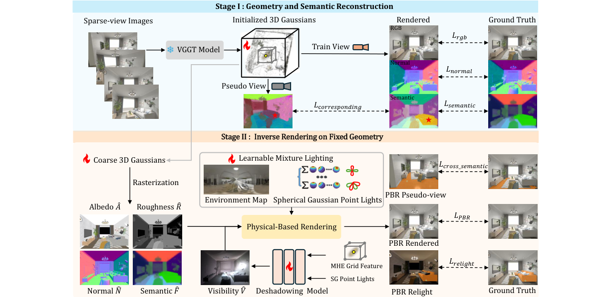

SGS-Intrinsic：用于稀疏视图室内逆渲染的语义不变高斯泼溅
简单摘要
然而，由于监督信号的稀疏性、场景的复杂性以及材质的强耦合，稀疏视图下的逆渲染，特别是室内场景，仍然是一个高度不适定的问题。在本文中，我们提出了 SGS-Intrinsic，这是一种用于稀疏视图室内逆渲染的两阶段框架。

然而，由于监督信号的稀疏性、场景的复杂性以及材质的强耦合，稀疏视图下的逆渲染，特别是室内场景，仍然是一个高度不适定的问题。具体来说，我们在本文中针对的使用高斯分布的稀疏视图室内逆渲染面临以下三个挑战。
核心创新
论文真正新增的设计，首先体现在 我们推出了 SGS-Intrinsic，这是一种室内逆渲染框架，非常适合稀疏视图图像。这一步不是换个说法重复问题定义，而是直接改动了方法主线的切入点。
进一步看，为了减轻投射阴影的影响并增强材料恢复的鲁棒性，我们引入了光照不变材料约束和去阴影模型。作者这样安排，是为了让前面的表示、约束或训练信号继续影响后面的求解链路。
进一步看，为了解决这些问题，我们引入了混合照明模型和轻量级去阴影模块，它们分别能够明确地解开照明和遮挡并对其进行建模。作者这样安排，是为了让前面的表示、约束或训练信号继续影响后面的求解链路。
进一步看，在状态II中，我们根据第一阶段获得的高斯函数进行逆渲染。作者这样安排，是为了让前面的表示、约束或训练信号继续影响后面的求解链路。
进一步看，采用混合光模型和去阴影模块来模拟照明和遮挡关系，然后将其与高斯渲染的 G 缓冲区集成，以实现基于物理 (PBR) 的新颖视图渲染。作者这样安排，是为了让前面的表示、约束或训练信号继续影响后面的求解链路。
技术细节
围绕 技术总览，在第一阶段，我们利用预训练模型中的语义和几何先验来帮助构建高质量的基于高斯的几何场，而在第二阶段。给定多个光照条件，通过 alpha 混合渲染的反照率应该保持不变。采用混合光模型和去阴影模块来模拟照明和遮挡关系。作者这样设计，是为了把这一节的输入、约束和输出关系讲清楚。
3 方法
围绕 3 方法，给定稀疏视图室内图像作为输入，我们的目标是基于 3D 高斯恢复场景几何形状和内在属性。如图所示，我们的方法由两个阶段组成。在第一阶段，我们利用预训练模型中的语义和几何先验来帮助构建高质量的基于高斯的几何场，而在第二阶段。作者这样设计，是为了把这一节的输入、约束和输出关系讲清楚。
3.1 几何和语义重建
大多数先前的 3D 高斯重建方法都依赖于 RGB 重建损失来进行训练。然而，在稀疏视图监督下，它们往往会过度拟合观察到的视点，导致不可靠的几何重建。作者这样设计，是为了把这一节的输入、约束和输出关系讲清楚。
$$ \mathcal{L}_{normal} = 1 - \hat{n}^T n_m, $$
这条式子是在定义一个可直接计算的中间量：右侧把相对位置、方向、权重或比例关系组合起来，左侧则把这个组合结果记成后续模块要反复使用的变量。
$$ \mathcal{L}_{semantic} = \mathcal{L}_{\text{cos}}(\hat{F}, F) + \mathcal{L}_{\text{ce}}(\hat{S}, S), $$
放在“方法”这一部分看，它重点在定义或约束 L semantic 这一项。这条式子是在定义一个可直接计算的中间量：右侧把相对位置、方向、权重或比例关系组合起来，左侧则把这个组合结果记成后续模块要反复使用的变量。
$$ \mathcal{L}_{S1} = \mathcal{L}_{rgb}+\mathcal{L}_{semantic} + \lambda_1 \mathcal{L}_{normal} + \lambda_2 \mathcal{L}_{corresponding}, $$
放在“方法”这一部分看，它重点在定义或约束 L S1 这一项。这条式子是在定义一个可直接计算的中间量：右侧把相对位置、方向、权重或比例关系组合起来，左侧则把这个组合结果记成后续模块要反复使用的变量。
$$ \mathcal{L}_{\text{corresponding}} = \sum_{p=1}^{P} \| \frac{\hat{F}_p \odot \mathcal{M}_p^*}{\sum \mathcal{M}_p^*} - \frac{\hat{F} \odot \mathcal{M}}{\sum \mathcal{M}} \|_2 \notag \\ - \sum_{p=1}^{P} \mathbb{R}[\Phi(\hat{S} \odot \mathcal{M})] \log(\hat{S}_p^* \odot \mathcal{M}_p^*), $$
这条式子给出了噪声预测训练目标：模型在随机时间步接收带噪输入和条件信息，然后尽量把真实噪声估计准确。训练好这一项之后，反向采样时才能稳定地把噪声状态一步步拉回真实场景分布。
3.2 固定几何体的逆向渲染
围绕 3.2 固定几何体的逆向渲染，由于照明模型的表达能力有限以及稀疏视图设置下的几何重建不现实，以前的方法经常会在场景级别上遇到性能下降的问题。为了解决这些问题，我们引入了混合照明模型和轻量级去阴影模块，它们分别能够明确地解开照明和遮挡并对其进行建模。此外，为了促进照明和材料的解耦，我们引入了材料一致的正则化训练策略。作者这样设计，是为了把这一节的输入、约束和输出关系讲清楚。
由于照明和材质属性之间的强耦合，逆向渲染本质上是不适定的。为了解决这个问题，我们建议基于光照不变性和材料属性的多视图一致性构建额外的约束。给定多个光照条件，通过 alpha 混合渲染的反照率应该保持不变。
$$ L_i = L_i^{\text{SGM}} + L_i^{\text{env}}, $$
放在“方法”这一部分看，它重点在定义或约束 L i 这一项。这条式子是在定义一个可直接计算的中间量：右侧把相对位置、方向、权重或比例关系组合起来，左侧则把这个组合结果记成后续模块要反复使用的变量。
$$ \begin{aligned} \text{SGM}(\omega_i; b, \lambda, \mu) = \sum_{k=1}^{N_{\text{sg}}} \mu_k e^{\lambda_k (\omega_i \cdot b_k^{-1})} \cdot W_k, \end{aligned} $$
放在“方法”这一部分看。这条式子描述了多个分量的聚合或逐步合成过程。它通常表示模型如何把局部贡献、概率权重或多项损失累积成最终结果。
$$ \mathcal{L}_{cross\_semantic} = \sum_{p=1}^{P} ( \| \bar{F}_p^* - \bar{F} \|_2 + \| \bar{A}_p^* - \bar{A} \|_2 ), $$
放在“方法”这一部分看，它重点在定义或约束 L cross semantic 这一项。这条式子给出了噪声预测训练目标：模型在随机时间步接收带噪输入和条件信息，然后尽量把真实噪声估计准确。训练好这一项之后，反向采样时才能稳定地把噪声状态一步步拉回真实场景分布。
$$ \mathcal{L}_{S2} = \mathcal{L}_{\text{PBR}} + \lambda_3 \mathcal{L}_{cross\_semantic} + \lambda_4 \mathcal{L}_{relight}, $$
这条式子是在定义一个可直接计算的中间量：右侧把相对位置、方向、权重或比例关系组合起来，左侧则把这个组合结果记成后续模块要反复使用的变量。
3.3 实施细节
对于第一阶段，我们将训练迭代总数设置为 7000。虚拟视图采样以及虚拟视图和真实视图之间的语义一致性约束在 2000 次迭代后被激活。对于阶段 II，训练迭代次数设置为 3000。作者这样设计，是为了把这一节的输入、约束和输出关系讲清楚。
实验结论
对于没有真实逆向渲染结果的真实数据集，我们改为对新颖的视图合成进行比较，并使用 MAE 度量来评估正常重建精度，使用 MSE 来评估粗糙度。可以看出，定量和定性结果都表明我们的方法不仅在几何和材料重建方面优于现有方法。
4.1 与最先进方法的比较
可以看出，定量和定性结果都表明我们的方法不仅在几何和材料重建方面优于现有方法。如图所示，我们的方法在处理复杂的现实世界照明和材质交互方面比比较方法表现出明显的优势。除了 MipNeRF 之外，我们还在另外两个现实世界数据集 DL3DV 和 FIPT 上评估了我们的方法，这些数据集包含具有大面积灯光和扩展灯具的复杂现实环境。
4.2 更多分析
为了检查我们方法中每个组件的贡献，我们对以下模块进行了消融研究。此外，我们还评估了照明模型的表现力以及我们的方法对不可靠的预训练模型先验的鲁棒性。表和图提供了定量和定性结果，以证明材料不变约束（和）的有效性。

理解评价
如果把这篇论文放回问题背景里看，它真正的价值在于：我们推出了 SGS-Intrinsic，这是一种室内逆渲染框架，非常适合稀疏视图图像。这说明作者不是只补一个局部模块，而是在重新组织问题该怎样被解决。
最能支撑这个判断的，还是实验给出的证据：为了减轻投射阴影的影响并增强材料恢复的鲁棒性，我们引入了光照不变材料约束和去阴影模型。换句话说，这些设计并不只是概念上更完整，而是实实在在改变了最终结果。
当然，它离真正成熟的方案还有距离：当前方案的主要局限在于它仍然受到计算资源、输入质量或场景复杂度的约束，离真正大规模稳定部署还有距离。后续更值得继续推进的方向，是 未来继续提升效率、泛化能力以及在更复杂场景下的稳定性。